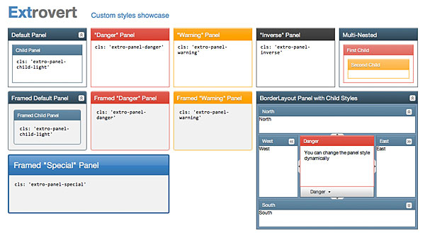

Welcome to Extrovert
Extrovert is a custom theme for Ext JS 4.0 that looks nice and includes some useful goodies. It makes styling individual panels quite easy compared to the standard Ext theming approach. The examples also demonstrate how to extend Extrovert, how to implement adaptive application layouts in Ext and more.
Extrovert is still a work-in-progress, and certainly should not be used in production. There will be improvements and more documentation to come, but for now feel free to play around.
Patches are welcome. Fork and pull request to your heart's content!
And if you missed it above... do NOT use this in production! It is far from complete!
About
Extrovert is a project of Extensible and Brian Moeskau (@bmoeskau).
Extrovert is provided free of charge and without support. It is licensed under the MIT license.